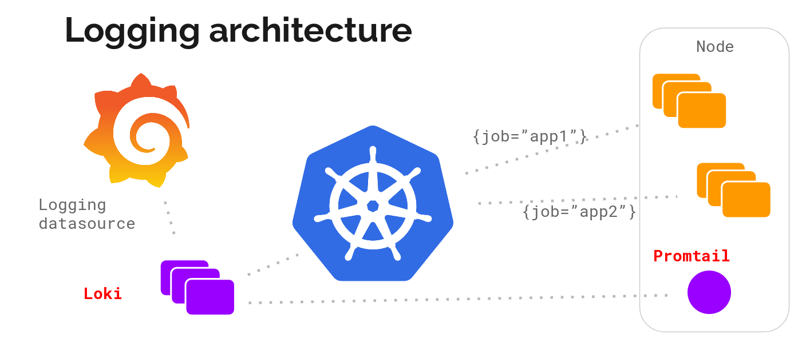

Loki - Kubernetes logging
Loki is a Prometheus-inspired logging service for cloud native infrastructure.
What is Loki?
Open sourced by Grafana Labs during KubeCon Seattle 2018, Loki is a logging backend optimized for users running Prometheus and Kubernetes with great logs search and visualization in Grafana 6.0.
Grafana Loki is a set of components, that can be composed into a fully featured logging stack.
It builds around the idea of treating a single log line as-is. This means that instead of full-text indexing them, related logs are grouped using the same labels as in Prometheus. This is much more efficient and scales better.
Components
- Loki: The main server component is called Loki. It is responsible for permanently storing the logs it is being shipped and it executes the LogQL queries from clients. Loki shares its high-level architecture with Cortex, a highly scalable Prometheus backend.
- Promtail: To ship logs to a central place, an agent is required. Promtail is deployed to every node that should be monitored and sends the logs to Loki. It also does important task of pre-processing the log lines, including attaching labels to them for easier querying.
- Grafana: The Explore feature of Grafana 6.0+ is the primary place of contact between a human and Loki. It is used for discovering and analyzing logs.

Deploy Loki and Promtail to Kubernetes cluster using Helm Chart
Make sure you have Helm installed and deployed to your cluster. Then add Loki’s chart repository to Helm:
helm repo add loki https://grafana.github.io/loki/charts
You can update the chart repository by running:
helm repo update
Deploy in a loki-stack namespace
helm upgrade --install loki --namespace=loki-stack loki/loki-stack
Verify the installation
kubectl --namespace=loki-stack get services
kubectl --namespace=loki-stack get pods
Add Loki as Data Source to Grafana
Grafana ships with built-in support for Loki for versions greater than 6.0, however using 6.3 or later is highly recommended.
- Log into your Grafana.
- Go to
Configuration>Data Sourcesvia the cog icon on the left side bar. - Click the big + Add data source button.
- Choose Loki from the list.
- The http URL field should be the address of your Loki server e.g.
http://loki.loki-stack:3100when running with kubernetes. - To see the logs, click Explore on the sidebar, select the Loki datasource, and then choose a log stream using the Log labels button.
Querying
To get the previously ingested logs back from Loki for analysis, you need a client that supports LogQL. (e.g. Grafana)

LogQL
Loki has it’s very own language for querying logs from the Loki server called LogQL. Think of it as distributed grep with labels for selection.
A log query consists of two parts: log stream selector, and a filter expression. For performance reasons you need to start by choosing a set of log streams using a Prometheus-style log stream selector.
The log stream selector will reduce the number of log streams to a manageable volume and then the regex search expression is used to do a distributed grep over those log streams.
Log Stream Selector
For the label part of the query expression, wrap it in curly braces {} and then use the key value syntax for selecting labels. Multiple label expressions are separated by a comma:
{app="mysql",name="mysql-backup"}
The following label matching operators are currently supported:
=exactly equal.!=not equal.=~regex-match.!~do not regex-match.
Examples:
{name=~"mysql.+"}{name!~"mysql.+"}
The same rules that apply for Prometheus Label Selectors apply for Loki Log Stream Selectors.
Filter Expression
After writing the Log Stream Selector, you can filter the results further by writing a search expression. The search expression can be just text or a regex expression.
Example queries:
{job="mysql"} |= "error"{name="kafka"} |~ "tsdb-ops.*io:2003"{instance=~"kafka-[23]",name="kafka"} != kafka.server:type=ReplicaManager
Filter operators can be chained and will sequentially filter down the expression - resulting log lines will satisfy every filter. Eg:
{job="mysql"} |= "error" != "timeout"
The following filter types have been implemented:
|=line contains string.!=line does not contain string.|~line matches regular expression.!~line does not match regular expression.
The regex expression accepts RE2 syntax. The matching is case-sensitive by default and can be switched to case-insensitive prefixing the regex with (?i).